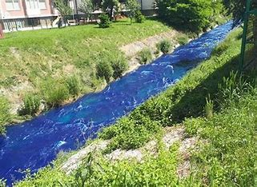
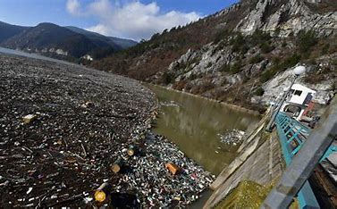
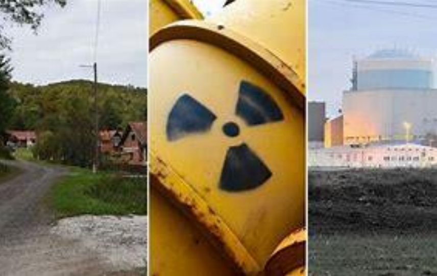
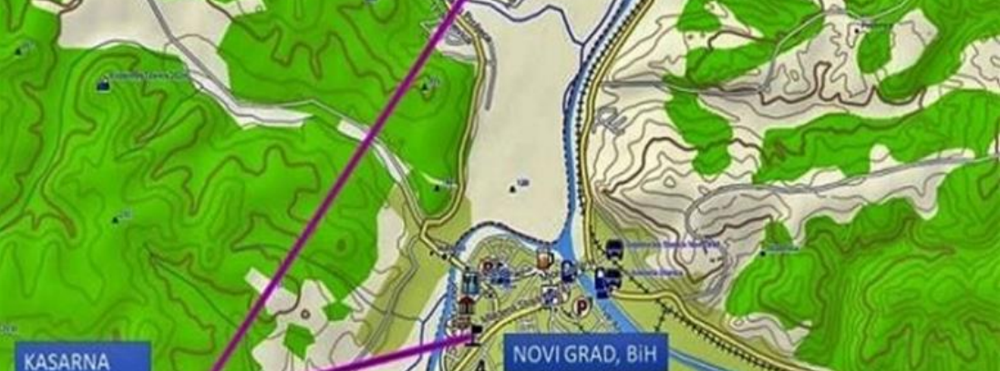
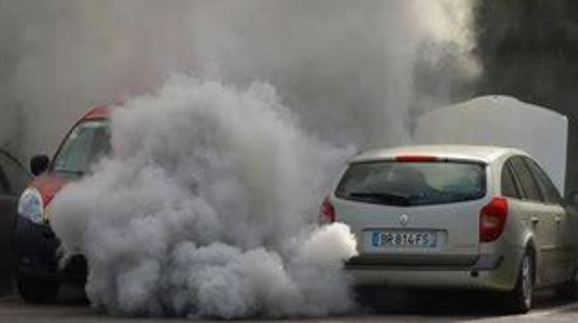

Izljevanje otpadnih voda u Bosni i Hercegovini, kao i u bilo kojoj drugoj zemlji, može predstavljati ozbiljan problem za okoliš i zdravlje ljudi. Otpadne vode koje nisu pravilno tretirane ili koje se ne ispuštaju prema odgovarajućim standardima mogu sadržavati razne kontaminante, uključujući teške metale, kemikalije, organske tvari i mikroorganizme. U Bosni i Hercegovini postoji zakonodavni okvir koji regulira upravljanje otpadnim vodama, a nadležna tijela su odgovorna za provedbu tih propisa. Međutim, kao iu mnogim drugim zemljama, pitanje upravljanja otpadnim vodama u Bosni i Hercegovini suočava se s izazovima. Jedan od problema je nedostatak adekvatne infrastrukture za obradu otpadnih voda. Mnogi gradovi i naselja nemaju postrojenja za pročišćavanje otpadnih voda, zbog čega se otpadne vode ispuštaju direktno u prirodna vodna tijela poput rijeka i jezera, čime se one zagađuju.
 Radioaktivni otpad je postao ozbiljan problem zagađenja u Bosni i Hercegovini. Ovaj otpad potiče uglavnom iz nuklearnih i medicinskih instalacija, industrije i istraživačkih institucija. Problem leži u nedostatku adekvatnih postrojenja za tretman i skladištenje radioaktivnog otpada, kao i nedovoljno razvijenim kapacitetima za njegovo sigurno odlaganje. Radioaktivni otpad može izazvati ozbiljne posledice po zdravlje ljudi i životnu sredinu. Izloženost ovom otpadu može dovesti do pojave raka, oštećenja genetskog materijala, mutacija i drugih dugoročnih bolesti. Takođe, radioaktivni otpad može kontaminirati zemljište, vodu i vazduh, što predstavlja opasnost za biljni i životinjski svet. Upravljanje radioaktivnim otpadom zahteva stroge sigurnosne standarde i procedura. Važno je osigurati pravilno skladištenje i transport otpada, kao i obezbediti dugoročno odlaganje na sigurnim lokacijama. Međutim, u BiH postoji nedostatak infrastrukture i resursa za adekvatno upravljanje radioaktivnim otpadom. Da bi se smanjio rizik od radioaktivnog zagađenja, neophodno je uložiti napore u izgradnju specijalizovanih postrojenja za tretman i skladištenje radioaktivnog otpada, kao i u obuku stručnjaka koji će se baviti ovim problemom. Takođe je važno uspostaviti jasne zakonske okvire i mehanizme nadzora kako bi se osigurala bezbednost i zaštita životne sredine od radioaktivnog otpada.
 Saobraćaj u Bosni i Hercegovini (BiH) predstavlja značajan izvor zagađenja životne sredine, sa emisijama izduvnih gasova kao glavnim faktorom. Starija vozila, loš kvalitet goriva, prometne gužve, nedostatak javnog prevoza i loša infrastruktura su neki od uzroka ovog problema. Da bi se smanjilo zagađenje izazvano saobraćajem, potrebno je unapređenje kvaliteta goriva, poboljšanje javnog prevoza, promovisanje električnih i hibridnih vozila, ulaganje u izgradnju modernih i efikasnih sistema javnog prevoza i edukacija vozača o ekološkim aspektima vožnje.
